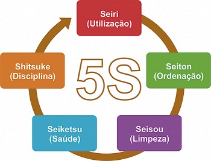
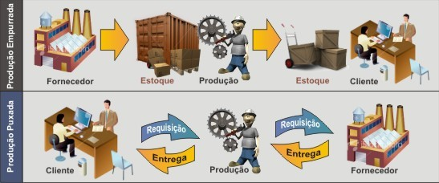
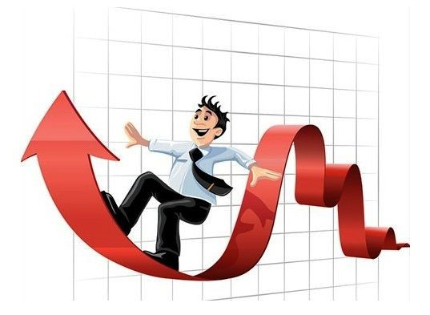

Definição de Qualidade
“Um produto não precisa necessariamente ter a melhor qualidade possível: o único requisito é que o produto satisfaça as exigências do cliente para o seu uso. ” (Shigeru Mizuno)
Qualidade não é luxo, excelência nem perfeição. É a capacidade de o serviço cumprir uma missão. “Qualidade é adequação ao uso.” (Juran)
Segundo Juran, essa adequação divide-se em duas direções:
- Características que satisfazem as necessidades do cliente;
- Ausência de falhas.
- Características que satisfazem as necessidades do cliente
Melhor qualidade significa tornar a cooperativa apta a:
- Aumentar a satisfação dos clientes internos;
- Captar um maior número de cooperados;
- Fixar preços diferenciados do mercado.
- Ausência de falhas
Melhor qualidade significa tornar a cooperativa apta a:
- Reduzir a insatisfação dos cooperados;
- Reduzir desperdícios;
- Aumentar a lucratividade.
Características de Qualidade do Produto
A preferência do cliente pelos serviços de uma determinada cooperativa prende-se a um conjunto de características de qualidade que agregam valor ao serviço prestado e que ultrapassam a simples ausência de falhas. Ou seja, toda empresa, direta ou indiretamente, visa satisfazer clientes, empregados, acionistas e sociedade.
Esta satisfação é traduzida em termos de qualidade em:
- Qualidade intrínseca
- Custo
- Entrega/Atendimento
- Moral
- Segurança
Qualidade intrínseca
A qualidade intrínseca refere-se especificamente às características do produto ou serviço, capazes de dar satisfação ao consumidor, como ausência de defeitos, perdas, adequação ao uso, presença de características que interessam o cliente (confiabilidade, previsibilidade, etc).
Custo
Mesmo um produto de alta qualidade pode gerar insatisfação do cliente, se o seu preço for inacessível. Portanto, o seu preço deverá estar adequado ao valor que este bem ou serviço tem para o usuário.
Entrega/Atendimento
O melhor atendimento é aquele que supera as expectativas do cliente e satisfaz suas necessidades que vão além daquelas supridas pelo produto em si, gerando contentamento, confiança e credibilidade.
Moral
O problema da qualidade abrange a globalidade da empresa, porque qualidade é um processo circular. Com isso , ocorre um fenômeno cumulativo: insumos defeituosos, mão-de-obra não treinada, equipamentos obsoletos, projetos incompletos ou imperfeitos, falta de comunicação com os consumidores, etc.
Nesta situação, um novo conceito que aparece é o do cliente interno, isto é, cada empregado é cliente do processo anterior. É fundamental preparar o consumidor (interno) para que seja exigente em relação a como ele recebe o processo do empregado anterior. Desta forma, o cliente externo é um consumidor de produtos ou serviços, e o cliente interno é um consumidor de processos.
A moral, para os cooperados, pode ser relacionada com a tradição e idoneidade da cooperativa, cumprimento de prazos, orientação correta, entre outros.
Segurança
É fundamental que o produto ou serviço não ofereça riscos para a saúde física ou psíquica do consumidor.
Definição de 5s
5S é um programa de gestão de qualidade empresarial desenvolvido no Japão que visa aperfeiçoar aspectos como organização, limpeza e padronização. Os princípios utilizados são semelhantes aos de crescimento humano profissional.
O Programa 5S normalmente é implementado como um plano estratégico para que alguns aspectos fundamentais da empresa comecem a apresentar melhorias rumo à qualidade total.
A junção no número “5” com a letra “S” vem de cinco palavras japonesas que começam com S:
- Seiri – Senso de utilização
- Seiton – Senso de organização
- Seiso – Senso de limpeza
- Seiketsu – Senso de padronização
- Shitsuke – Senso de disciplina.
Sua principal vantagem é a facilidade de provocar mudanças comportamentais em todos os setores das empresas.

Implementação do Programa
O programa 5s pode ser implementado em qualquer tipo de empresa, órgãos públicos, escolas, associações e até na vida pessoal de cada um. Sua implementação leva a um aumento na produtividade, eficiência, segurança e motivação, além de ser aliado dos requisitos para uma certificação ISO.
5S – Seiri: Senso de utilização
O principal objetivo da primeira etapa do programa 5S é tornar o ambiente de trabalho mais útil e menos poluído, tanto visualmente como espacialmente. Para tal, deve-se classificar os objetos ou materiais de trabalho de acordo com a frequência com que são utilizados para, então, rearranjá-los ou colocá-los em uma área de descarte devidamente organizada. O resultado desse primeiro passo do programa 5s é um ambiente de trabalho estruturado e organizado de acordo com as principais necessidades de cada empresa.
5S – Seiton: Senso de organização
O segundo passo do programa 5s é uma continuação do primeiro. Seu conceito chave é a simplificação. A partir da organização espacial previamente feita, essa etapa visa dar aos objetos que são menos utilizados um local em que eles fiquem organizados e etiquetados. Assim, agilizam-se os processos e há maior economia de tempo.
5S – Seiso: Senso de limpeza
O terceiro item o processo 5S consiste na limpeza e investigação minuciosa do local de trabalho em busca de rotinas que geram sujeira ou imperfeições. Qualquer elemento que possa causar algum distúrbio ou desconforto (como mal cheiro, falhas na iluminação ou barulhos) deve ser consertado. O principal resultado é um ambiente que gera satisfação nos funcionários por trabalharem em um local limpo e arrumado, além de equipamentos com menos possibilidades de erros ou de quebra por conta da constante fiscalização.
5S – Seiktsu: Senso de padronização
O quarto conceito do programa 5S consiste na manutenção dos três iniciais, gerando melhorias constantes para o ambiente de trabalho. Nessa etapa, deve-se definir quem são os responsáveis pela continuidade das ações das etapas iniciais do 5s. Com um ambiente mais limpo, há grande chance de os funcionários também buscarem maior cuidado com o visual e com a saúde pessoal, garantindo ainda mais equilíbrio e bom desempenho no trabalho e contribuindo ainda mais para o andamento do processo rumo à qualidade total.
5S – Shitsuke: Senso de disciplina
Quando o quinto e último processo do programa 5s está em execução, quer dizer que o programa está em andamento perfeito. A disciplina, que pode ser considerada a chave do 5S, existe quando cada um exerce seu papel para a melhoria do ambiente de trabalho, do desempenho e da saúde pessoal, sem que ninguém o cobre por isso.
Benefícios do Programa?
- Aumento da qualidade do produto ou serviço;
- Aumento da produtividade;
- Fornece a base necessária para implementar outros programas de qualidade;
- Facilita a detecção de erros, objetos fora do lugar e outros problemas que precisam de atenção;
- Prevenção de acidentes;
- Melhoria do ambiente de trabalho;
- Melhoria da qualidade de vida;
Para mais informações sobre o 5s, clique aqui.
O que é Just in Time?
O Just in Time, que significa “momento certo”, é um sistema com objetivo de produzir a quantidade exata de um produto, de acordo com a demanda, de forma rápida e sem a necessidade da formação de estoques, fazendo com que o produto chegue a seu destino no tempo certo, por isso carrega o nome de Just in Time.
O Just in Time tem um grande impacto em uma cadeia produtiva, de forma a alocar apenas a matéria-prima na quantidade certa para determinado produto em um determinado tempo.
Todos os esforços e investimentos no sistema têm como objetivo reduzir ao máximo desperdícios e prejuízos, muito comuns em indústrias que ficam com excesso de produtos por falta de rotatividade.
Vantagens do Just in Time
A principal vantagem de trabalhar com esse sistema fica concentrada na agilidade do processo e na redução de custos de estoque, o que implica nos resultados de toda cadeia produtiva.
O fornecedor entrega as matérias-primas em pequenas quantidades, por isso, o fluxo contínuo de entrega torna o processo de desenvolvimento do produto mais rápido, também exigindo mais agilidade na entrega do produto final e consequentemente, otimizando o espaço de armazenagem.

Desvantagens do Just in Time
A grande desvantagem do sistema é que esse processo não pode ser aplicado em indústrias com pouca previsibilidade em demanda e que passa por diversas oscilações. Existem empresas que necessariamente precisam de um estoque, e o conceito de Just in Time não se adéqua às necessidades desse tipo de negócio.
Outro ponto negativo do processo é que ele só funciona bem quando a empresa trabalha com poucos fornecedores e que tenham estabilidade no fornecimento de materiais.
Controle de Qualidade Total – TQC
O TQC (Total Quality Control - controle de qualidade total) tem como papel principal a satisfação total tanto de fabricantes quanto dos clientes, sendo que fatores diversos influenciarão neste ciclo de satisfação.
O TQC pode ser usado em qualquer empresa ou estabelecimento que queira a otimização do serviço, através de técnicas de relacionamento, aperfeiçoamento, controle, padronização, entre outras, com o objetivo de aumentar do lucro.

“TQC NO ESTILO JAPONÊS”
Surgiu então a industrialização da fabricação de determinados produtos, onde tínhamos uma equipe responsável pela produção e um profissional responsável pela supervisão desta produção.
A indústria passou por uma série de ajustes para conquistar o mercado e surgiu então o primeiro processo padronizado de controle de qualidade, conhecido por TQC. Muitos citam que este foi o primeiro passo para o que conhecemos hoje como ISO e tinha como principais características em relação aos sistemas de controle anteriores:
- Satisfação do cliente como um dos objetivos principais durante todo o processo (da produção à venda);
- Sistema de aperfeiçoamento contínuo (um dia de trabalho não poderia passar sem que algum tipo de melhoria fosse feito em algum lugar na empresa);
- Integração entre funcionários e setores da empresa, gerando assim um ambiente mais saudável na empresa;
- Valorização do respeito ao trabalhador.
Assim sendo, o TQC é uma filosofia administrativa/empresarial, atuando na empresa em todos os setores no sentido decrescente de sua organização (de cima para baixo) e que tem como principais pontos de meta:
- A qualidade
- O respeito
- A participação
- A confiança
Com este processo, ficou claro para os gerentes e diretores de empresas de que estabelecer um sistema da qualidade não está vinculado ao aumento ou redução da qualidade dos serviços ou produtos, porém tem como essência aumentar ou reduzir a certeza de que os requisitos e atividades especificados sejam cumpridos.
Atualmente a qualidade não está mais vinculada à qualidade de um produto ou serviço especifico, mas sim à qualidade do processo como um todo, ou seja, envolvendo todos os processos são realizados no dia a dia da empresa.
Em seguida, para entender melhor a importância do controle de qualidade, temos uma entrevista entre Mariana Isoni, responsável pelo Marketing Comercial da Teknisa com um dos especialistas em gestão da produção em indústrias.
Para saber mais, clique aqui.
Acesse nosso Instagram : https://www.instagram.com/gestao_qualidade/